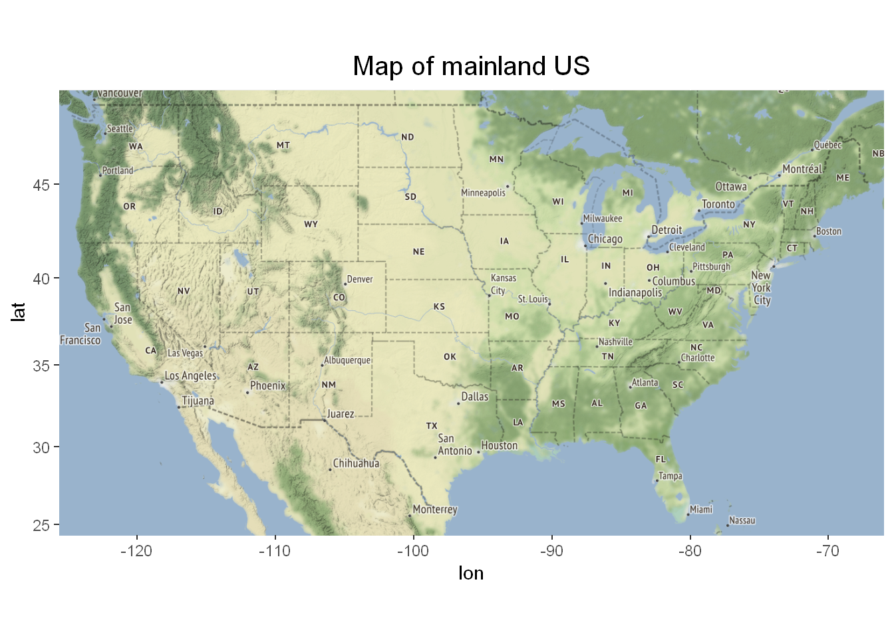

We will explore the Tidy Tuesday dataset for 2021-04-13, which is to do with the history of US post offices. The dataset contains information such as the location of the post offices, the date in which they were established, and if applicable, the date in which they were discontinued.
We will create an animation using the gganimate library together with the map library ggmap, to show how the the locations of US post offices changed over time.
# load libraries
library(tidyverse)
library(ggmap)
library(gganimate)
# read the data
post_offices <- read_csv('https://raw.githubusercontent.com/rfordatascience/tidytuesday/master/data/2021/2021-04-13/post_offices.csv')
# clean the data
post_offices <- post_offices %>%
replace_na(list(discontinued = 2003)) %>%
filter(discontinued >= established,
established >= 1800,
discontinued <= 2003,
!state %in% c("AK","HI" )) %>%
mutate(year = map2(established, discontinued, seq)) %>%
unnest(year) %>%
select(latitude,longitude,year) %>%
na.omit()Now we will create a map to base our animation
First we create a bounding box to choose the map area we want. This gives us a map of the US
us <- c(left = min(post_offices$longitude) - 1 ,
bottom = min(post_offices$latitude) - .25 ,
right = max(post_offices$longitude) + 1,
top = max(post_offices$latitude) + .25)
us_map <- get_stamenmap(us, zoom = 5, maptype = "terrain")
ggmap(us_map)+
labs(title="Map of mainland US")+
theme(plot.title = element_text(size=15,hjust = 0.5))
We plot the points from our post_office data on top of this map and animate through the year variable.
anim <- ggmap(us_map)+
geom_point(data = post_offices %>% filter(year %% 5 == 0) ,
mapping = aes(x=longitude,y=latitude),
size=0.3,col="#c70a0a",alpha=0.3)+
transition_manual(year)+
labs(title="US post offices in {current_frame}")+
theme(plot.title = element_text(size=15,hjust = 0.5,))And we finally achieve our intended results!
animate(anim, width = 1200, height = 800,fps=60,end_pause = 10,duration = 5)## nframes and fps adjusted to match transition
Some of code was inspired by David Robinson’s screencasts.